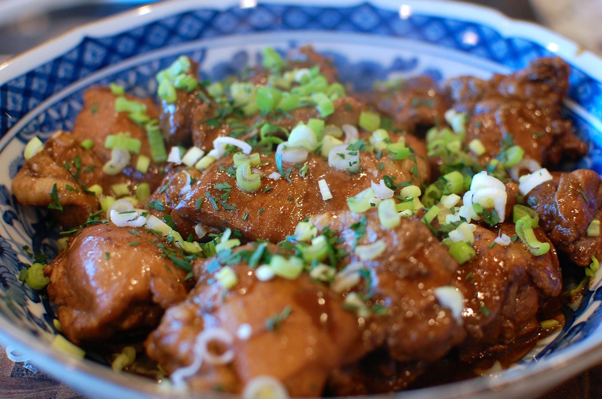

Adobong Manok

Description:
Adobong Manok is a classic Filipino dish featuring chicken stewed in a flavorful mixture of soy sauce, vinegar, garlic, bay leaves, and black pepper. The sauce is savory and tangy, with the chicken absorbing the rich flavors. Adobong Manok is a simple yet satisfying dish enjoyed with steamed rice, making it a staple in Filipino cuisine.
Ingredients
- 1 kg chicken, cut into pieces
- 1/2 cup soy sauce
- 1/3 cup vinegar
- 5 cloves garlic, crushed
- 1 onion, chopped (optional)
- 1-2 bay leaves
- 1 tsp black peppercorns or ground black pepper
- 1 tbsp cooking oil
- 1 cup water (optional, for more sauce)
- Salt, to taste
Steps to Cook:
-
Marinate the Chicken:
In a large bowl, combine the chicken pieces with soy sauce and crushed garlic. Let it marinate for at least 30 minutes to an hour.
-
Sauté Ingredients:
Heat cooking oil in a large pan over medium heat. Add chopped onion (if using) and sauté until softened. Then add the marinated chicken pieces and cook until they start to brown.
-
Add Seasonings and Simmer:
Add vinegar, bay leaves, and pepper. Do not stir right away to allow the vinegar to cook. Let it simmer for 2-3 minutes.
-
Add Water and Simmer:
Pour in water (if desired for more sauce), bring to a boil, then reduce the heat to low. Cover the pan and let the chicken simmer for 30-40 minutes, or until tender.
-
Adjust Seasoning and Serve:
Taste and adjust seasoning with salt if needed. Once the sauce has reduced to your desired consistency, remove from heat. Serve hot with steamed rice.